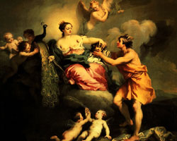

Меркурій, в римській міфології бог торгівлі, прибутку і збагачення, покровитель мандрівників, син Майї. У самих ранніх обрядах Меркурій (латинське слово "меркаре" означало "торгувати") шанувався як покровитель купців і мандрівних торговців.
Єдиною відмінною рисою зображень стародавнього божества був великий гаманець. Пізніше Меркурій був ототожнений з грецьким богом Гермесом і поставав уже в крилатих сандалях, дорожньої капелюсі, з жезлом (кадуцеєм) в руці. Невеликий капшук змінився об'ємистої грошової торбою, яку бог завжди носив при боці.
Віддавши належне пишності наряду, люди наділили Меркурія складнішими функціями. В останніх століттях минулої ери римляни вважали Меркурія покровителем ремесел, мистецтв, таємничих навчань, магії і астрології. Крім того, він проводжав померлих в царство мертвих, приносив вести і прислужував вищим богам.
Подібно Гермесу, римський бог був сином весняної богині. Тому жертви Меркурію і його матері Майї приносилися до початку календарного літа, в останні тижні травня, в травневі іди.
Особливе місце в римському пантеоні Меркурій заслужив працьовитістю, справедливістю і тим, що ніколи не втручався в сварки. Відкривши ртуть, середньовічні алхіміки назвали нову речовину ім'ям улюбленого бога. Астрономи вибрали ім'я Меркурій для однієї з планет Сонячної системи, найбільш наближеною до денного світила.